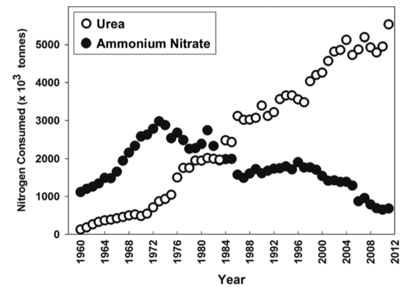

Paerl et al.
ECO-Jeopardy
| Nitrogen | Phosphorous | Lakes of the World |
|---|---|---|
| $100 | $100 | $100 |
| $200 | $200 | $200 |
| $300 | $300 | $300 |
Nitrogen $100
Nearly 90% of N fertilizer now being applied is of this form.
Question: What is urea?
BackPhosphorous $100
This agency's approach to remediating HAB pollution is to mandate total maximum daily loads for P.
Question: What is the US EPA?
BackLakes of the World $100
This lake had a 50% reduction in chlorophyll after nutrients reduction from sewage diversion.
Question: What is Lake Albufera?
BackNitrogen $200
High concentrations of this form of reactive N are required for the expression of toxin production genes.
Question: What is NH$_4^+$?
BackPhosphorous $200
This metabolic pathway increases with increased P driven eutrophication.
Question: What is denitrification?
BackLakes of the World $200
In 2014, this lake's cyanobacterial blooms cost 65 million dollars to the cities where it lies.
Question: What is Lake Erie?
BackNitrogen $300
You might have to twist this little guy's cylinder to get it to fix you some nitrogen.
Question: What is Cylindrospermopsis?
BackPhosphorous $300
Internal loading of nutrients is particularly high where concentrations of this ion is high.
Question: What is sulfate?
BackLakes of the World $300
In the 1980's this lake's blooms were cause by Anabaena circinalis.
Question: What is Lake Okeechobee?
BackAs fresh water quality deteriorates there is great need to reduce nutrient inputs to watersheds.
This problem is usually addressed via the reductions of Phosphorous (P), based on the fact that Phosphorous is a harder to come-by limiting nutrient and thus when available algal blooms take full advantage of it.
These blooms harm the water quality and biodiversity therein.
However in their paper, Paerl et al. argue that reducing only P is not enough and that the best solution to prevent the eutrophication of lakes and downstream ecosystems is to reduce both Phosphorous and Nitrogen (N).
Harmful algal blooms (or HABs) are impacting some important lakes around the world - these lakes show a cycle when it comes to nutrient loads patterns foretelling of a combined P and N effect to the respective lake's biomass production.

Paerl et al.
Urea is an organic compound CO(NH$_2$)$_2$.
Ureases is an enzyme found in various organisms such as bacteria and algae that convert urea into carbon dioxide and ammonia via hydrolysis:
(NH$_2$)$_2$CO + H$_2$O → CO$_2$ + 2NH$_3$.
However the moiety NH$_2$ is not usually measured as part of water quality analysis.
Besides the runoff of agrigultural fertilizers, there are other wastewater runoffs that contain nitrogen from more urban environments.
Measures need to be taken by the agencies that care for our waters to measure and reduce for both N and P inputs.
Q & A
with Paerl et al.
Which nutrients control eutrophication and HAB?
Short answer: Both N and P.
Long answer: Life is not black and white, which is to say that these nutrients are intertwined in a nutrient tango. Reducing one can thus reduce the other.
Phosporous is necessary for nitrogenase, the enzyme that fixes N$_2$.
Reactive N is needed for other plant enzymes in order for them to respire and fix carbon.
Thus N depends on P, but in a way...
What is P if not for N?
- at least from the perspective of the nitrogenase.
With regards to nutrient overenrichment, should we be concerned about all types of cyanobacteria?
Short answer: Yes.
Long answer: At Lake Erie, Microcystis are prominet examples of cyanobacteria that are harmful and reactive N hungry,
that is they don't fix their own and thus are "florishing" due to the lack of controls in N.
Another cyanobacterium contributing to HAB pollution is an N-fixing one: Cylindrospermopsis.
Surprised?
Imagine you are a bacterium and suddenly there is free nitrogen on the house - even if you are not a bacterium, it's free! The paper calls these guys reluctant N$_2$ fixers, I would call them reasonable.
How much improvement can be attained by reducing N in addition to P?
Short answer: 5 of 9.
Shorter answer: much.
Seriously: Let's just look at table 5.
Conclusion
Resource managers need to:
- Holistically consider lakes and downstream rivers, estuaries, and other coastal systems in developing nutrient control strategies.
- Move away from presuming that P-only control is the only solution to eutrophication issues.
- Determine whether a source control program targeted at both N and P will provide greater ecosystem benefits.
In order words...